Tech Stories
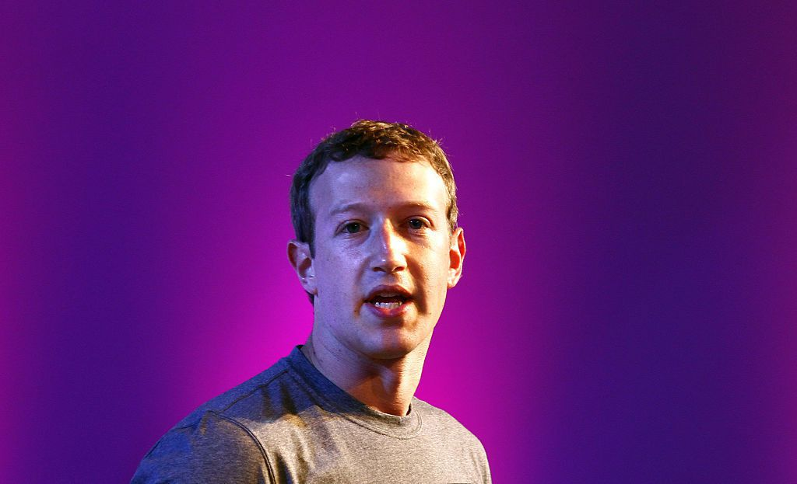
1. Facebook, Russia, and 'fake news'
When all you want to do is make the world more open and connected, but you end up building a surveillance architecture that allows a foreign power to subvert U.S. democracy, well, then you done screwed up. Either that, or it was about money and control all along.
Mark Zuckerberg’s company played a vital role in the dissemination of so-called fake news leading up to the 2016 election. Facebook's culpability in the sordid affair was painstakingly brought to light in story after story published over the last 12 months.
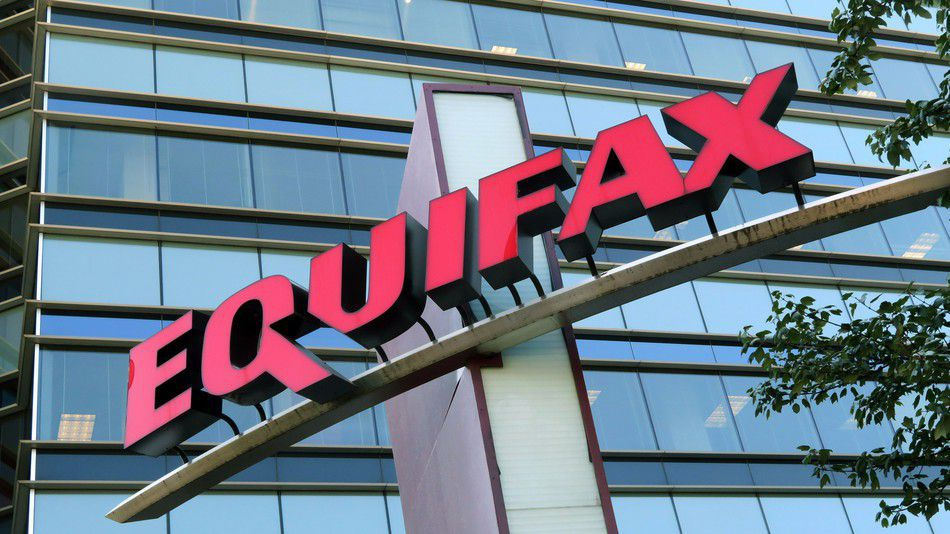
2. Cybersecurity, and oops there goes your data
Weaponized NSA exploits, ransomware freezing hospital computers, leaked Game of Thrones scripts, and hackers stealing the personal data of potentially 143 million Americans — all in all, 2017 was a bad year for cybersecurity.
WannaCry, a particularly virulent form of ransomware, spread around the globe with lightening speed and was only stopped by chance when a 22-year-old security researcher by the name of Marcus Hutchins managed to find and implement a so-called kill switch.
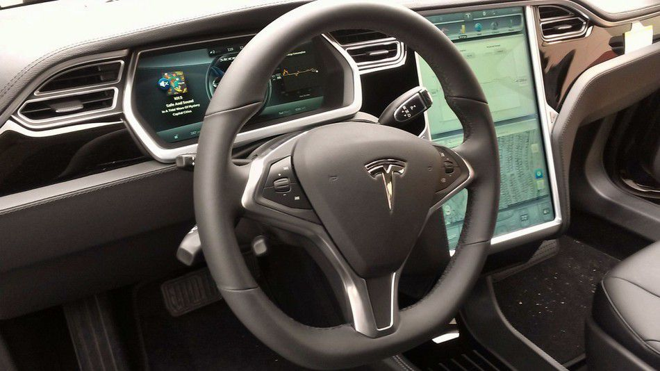
3. Tesla, and self-driving tech
This was the year self-driving cars became real. Sure, various forms of the tech existed before 2017, but over the course of the last 12 months we saw supposedly fully autonomous vehicles actually hit the streets of a major U.S. city with no driver behind the wheel. That is a big deal.
Tesla, of course, has grabbed headlines with its Model S, Semi, and new Roadster, but when it comes to autonomous tech, Waymo, Uber, and Lyft are all nipping at the company's heels.
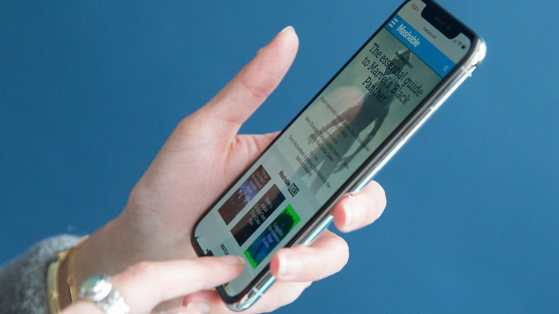
4. The disappearing phone
Say goodbye to the bezel. Over the course of 2017, companies like Apple and Samsung proved that nearly bezel-less phones are now the norm. The iPhone X is perhaps the most notable example of this, with an abandonment of the phone's chin and an embrace of the notch.
This past year kicked off a race toward phones that are all screen, and coming models will likely push this trend even further.
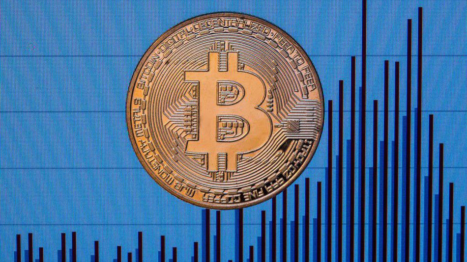
5. The rise of cryptocurrency'
If you hadn't already bought into the bitcoin craze, 2017 became the year you wish you had. Cryptocurrency grabbed our attention when hackers demanded it as ransom following the HBO hack, and as payment to unlock computers infected with WannaCry ransomware.
But that was only the beginning. Prices for bitcoin and ether shot way, way up, and pretty much everyone and their grandparents started to get in on the cryptocurrency market. Big banks bought in with the start of futures trading, and exchanges like Coinbase were even forced to remind everyone to just chill for a second.
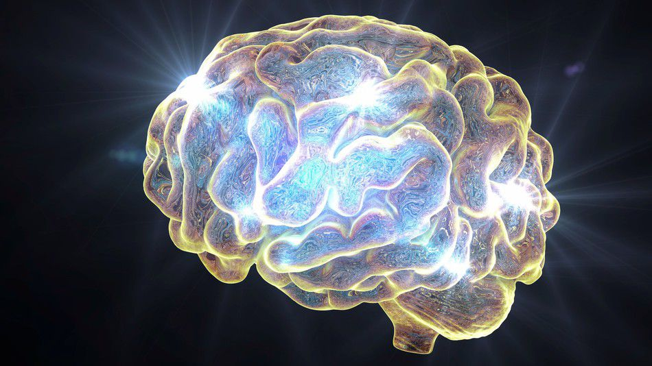
6. Machine learning steps in it
This year, we got a rare peek behind the machine-learning curtain, and, sadly, what we saw wasn't that inspiring. Sure, some developments gave us cause for cautious optimism, but it was the missteps that really defined 2017.
Google's artificial intelligence was called out for being both homophobic and sexist, and people began to realize that computers can inherit — and amplify — the biases of the people they seek to replace. But there is some hope. People have started to realize the importance of building ethics into AI,
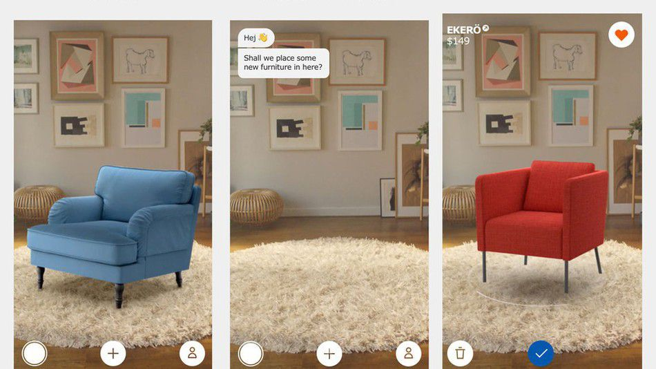
7.Augmented reality
Mark Zuckerberg and Facebook tried to set this year's agenda early on at F8, claiming that augmented reality is the next major platform. And while most people are not using AR in their daily lives (except dancing hot dog fans), the technology is expanding.
Ikea even got in on the game, publishing an AR app that allowed customers to virtually place furniture in their homes before purchasing. But that's only the tip of the iceberg. Apple released its ARKit — an augmented reality platform for the iPhone. Importantly, this requires no new hardware .
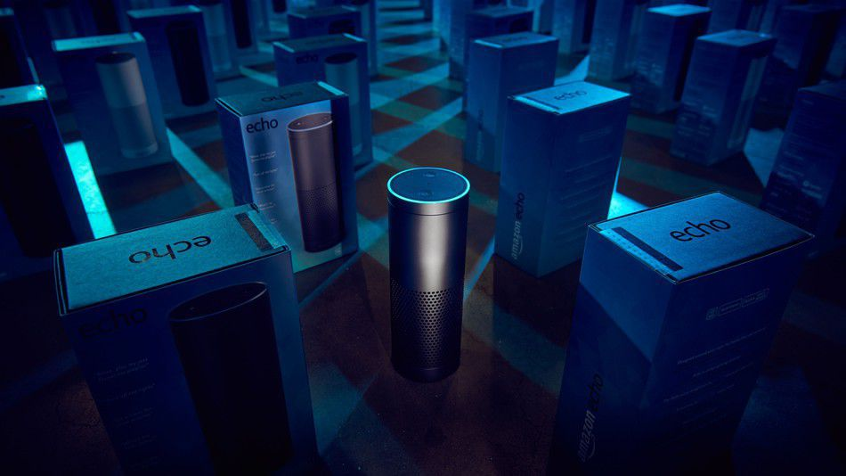
8. Smart speakers
The Echo and Google Home have taken the world by storm, and Apple is racing to catch up with the HomePod. Meanwhile, not content to be in one room of your house, Amazon has released additional in-home smart devices that purport to do everything from give you style tips to replace your alarm clock.
And while there has been some pushback to home-integrated smart devices, 2017 essentially primed the smart speaker to take over your entire home. That's a trend that isn't about to change.
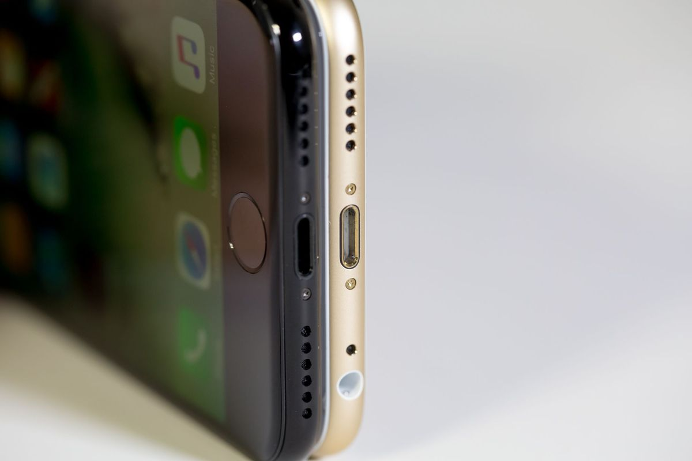
9. The headphone jack'
Apple's annual iPhone launch always hits the mobile world like a shiny glass meteor, but the new iPhone 7 had an aftershock that will be felt for years: the removal of the headphone jack.
Despite being a near-universal standard used in devices worldwide, the eminently functional 3.5mm jack couldn't survive Apple's determination to shape the future — one where audio is wireless. In the present, however, cords still rule, and Apple's big move has given us all dongles to lose, essentially mainstreaming inconvenience. (It's also forcing grown adults to say the word "dongle.")
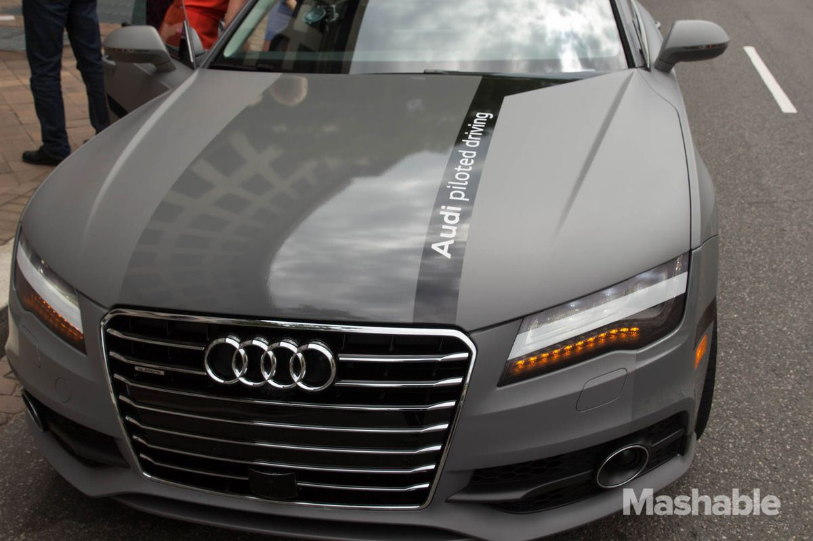
10. Self-driving cars rev their engines
This was the year development of driverless cars shifted into high gear. Tesla pledged to include an enhanced, completely self-driving Autopilot in all models, and Uber was the first ride-sharing company to put driverless cars on the road, starting in Pittsburgh.
But it wasn't all easy riding: Apple made some noise early with its rumored "Project Titan," but reportedly ran out of gas by the year's end. Google's autonomous program had its first (extremely minor) accident, and a tragic crash killed the driver of a Tesla, reportedly in Autopilot mode.
11. Hacking gets even worse
Large-scale hacks have unfortunately become relatively common in recent years, but 2016 managed to make them even more worrisome.
Various organizations (including WikiLeaks) were able to "weaponize" email breaches of political candidates with deliberate, precise leaks timed to maximize media coverage. The beleaguered Yahoo squandered whatever trust its users still had when it was revealed the company didn't publicly disclose a large-scale hack from 2014 until months after it found out.
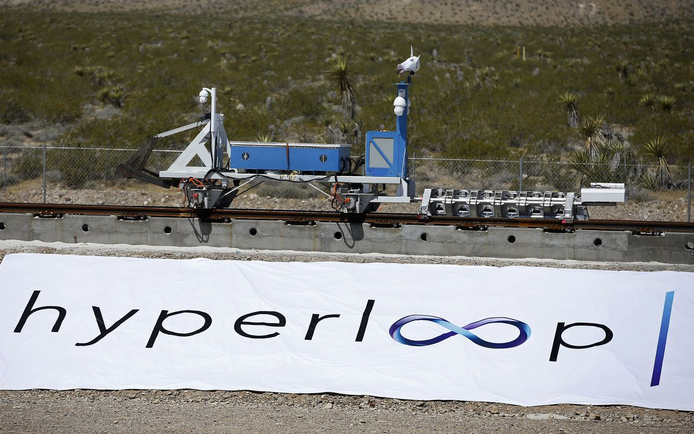
12. The disappearing phone
All companies have their ups and downs — especially young ones — but the battles are usually waged against external forces. Hyperloop One, though, bit its own tail.
The lawsuit was bizarre by any standard, with BamBrogam claiming that Pishevar's brother had placed a noose on his office chair. By November, the suit was settled, but the damage was done. The company has reorganized, but the promised first in-tube test that was supposed to happen in 2016 is pretty much out of reach.
12. The disappearing phone
All companies have their ups and downs — especially young ones — but the battles are usually waged against external forces. Hyperloop One, though, bit its own tail.
The lawsuit was bizarre by any standard, with BamBrogam claiming that Pishevar's brother had placed a noose on his office chair. By November, the suit was settled, but the damage was done. The company has reorganized, but the promised first in-tube test that was supposed to happen in 2016 is pretty much out of reach.